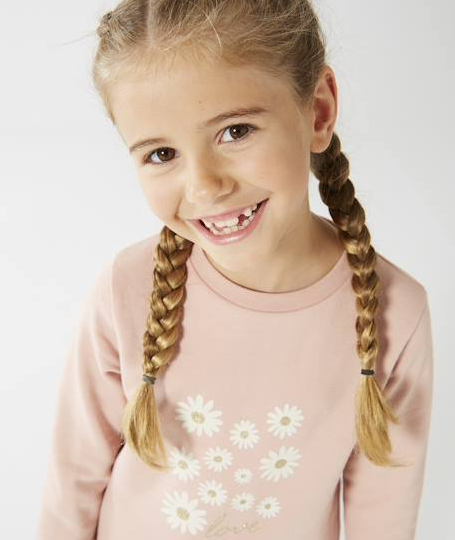
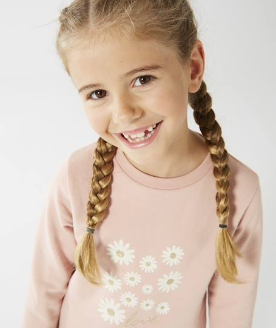

CONTRAINTES,
THÈME DU SOUVENIR
& ENJEUX
THÈME DU SOUVENIR
& ENJEUX
Le thème retenu de cette année est le souvenir. Initialement, ce n'était pas le thème pour lequel
j’avais
voté, car les autres me semblaient plus intéressants. Selon moi, j'aurais davantage pu jouer avec
l’implicite et faire des plans plus originaux si nous avions travaillé sur le thème de la folie par
exemple.
Les enjeux cinématographiques de ce thème sont nombreux, mais selon moi, les principaux étaient tout d’abord d'éviter une narration trop linéaire, une narration qui suit trop une logique que le spectateur peut comprendre dès le début. Il faut que le film soit dans le souvenir sans prendre forcément les codes que l’on voit dans tous les films abordant ce thème. Comme les traditionnels flashbacks en noir & blanc, ou la voix off que l’on entend en fond, ces choses ne m’intéressent pas.
Les souvenirs sont quelque chose de très personnel, car ils sont différents en fonction de chacun, et c’est ici que cela devient captivant, puisque ce thème permet d’explorer psychologiquement les personnages, leurs passés, leurs vies, leurs relations pour justement pouvoir comprendre l’essence de ces souvenirs…
Enfin, le dernier enjeu cinématographique, qui est sûrement le plus important, est de transmettre des émotions. Celle qui peut nous venir à l’esprit en parlant de souvenir, est la nostalgie. Celle-ci est en lien direct avec le souvenir. C’est un sentiment réconfortant, mais on peut l'aggraver en quelque chose de très triste, de mélancolique, et c’est ce que j’ai voulu faire avec mon projet.
Les enjeux cinématographiques de ce thème sont nombreux, mais selon moi, les principaux étaient tout d’abord d'éviter une narration trop linéaire, une narration qui suit trop une logique que le spectateur peut comprendre dès le début. Il faut que le film soit dans le souvenir sans prendre forcément les codes que l’on voit dans tous les films abordant ce thème. Comme les traditionnels flashbacks en noir & blanc, ou la voix off que l’on entend en fond, ces choses ne m’intéressent pas.
Les souvenirs sont quelque chose de très personnel, car ils sont différents en fonction de chacun, et c’est ici que cela devient captivant, puisque ce thème permet d’explorer psychologiquement les personnages, leurs passés, leurs vies, leurs relations pour justement pouvoir comprendre l’essence de ces souvenirs…
Enfin, le dernier enjeu cinématographique, qui est sûrement le plus important, est de transmettre des émotions. Celle qui peut nous venir à l’esprit en parlant de souvenir, est la nostalgie. Celle-ci est en lien direct avec le souvenir. C’est un sentiment réconfortant, mais on peut l'aggraver en quelque chose de très triste, de mélancolique, et c’est ce que j’ai voulu faire avec mon projet.
 
